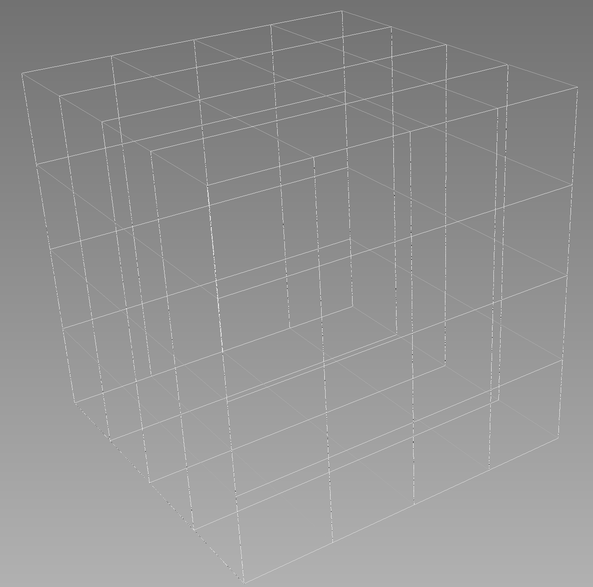
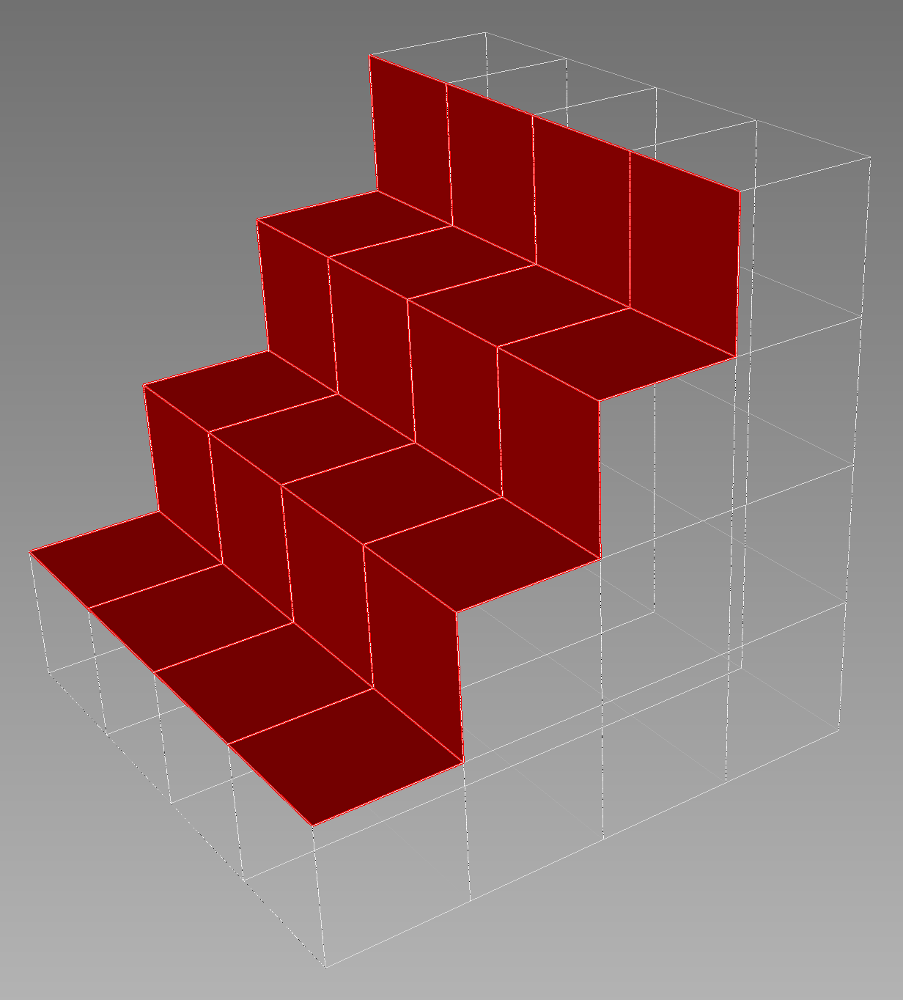

- inputThe mesh we want to modify
C++ Type:MeshGeneratorName
Controllable:No
Description:The mesh we want to modify
- normalThe normal that defines the plane
C++ Type:libMesh::VectorValue<double>
Controllable:No
Description:The normal that defines the plane
- pointThe point that defines the plane
C++ Type:libMesh::Point
Controllable:No
Description:The point that defines the plane
PlaneDeletionGenerator
Removes elements lying 'above' the plane (in the direction of the normal).
Overview
Allows for deletion of elements that lie on one side of a plane. The plane can be specified via a point and a vector that is normal to the plane. All elements whose centroids lie "above" (in the direction of the normal vector) the plane will be removed from the mesh.
An optional new_boundary parameter can also be specified which will make any newly-created free-surfaces have that boundary ID.
Example
[Mesh]
[generated]
type = GeneratedMeshGenerator
dim = 3
nx = 4
ny = 4
nz = 4
[]
[deleter]
type = PlaneDeletionGenerator
point = '0.5 0.5 0'
normal = '-1 1 0'
input = generated
new_boundary = 6
[]
[]

The Original Mesh

With the elements removed (and showing the new boundary)
Input Parameters
- new_boundaryoptional boundary name to assign to the cut surface
C++ Type:BoundaryName
Controllable:No
Description:optional boundary name to assign to the cut surface
- show_infoFalseWhether or not to show mesh info after generating the mesh (bounding box, element types, sidesets, nodesets, subdomains, etc)
Default:False
C++ Type:bool
Controllable:No
Description:Whether or not to show mesh info after generating the mesh (bounding box, element types, sidesets, nodesets, subdomains, etc)
Optional Parameters
- control_tagsAdds user-defined labels for accessing object parameters via control logic.
C++ Type:std::vector<std::string>
Controllable:No
Description:Adds user-defined labels for accessing object parameters via control logic.
- enableTrueSet the enabled status of the MooseObject.
Default:True
C++ Type:bool
Controllable:No
Description:Set the enabled status of the MooseObject.